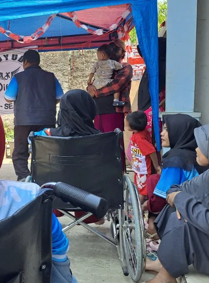

Lingkup perlindungan
Keluarga Asuh Tunas
Pendampingan responsif dan rehabilitatif bagi keluarga dengan anak yang membutuhkan perlindungan khusus — utamanya pada isu keamanan, kesehatan, dan pendidikan.
- Asesmen menyeluruh Bio-psiko-sosial-spiritual anak dan keluarga, dengan prinsip etik pekerja sosial profesional.
- Pendampingan intensif Enam bulan awal untuk memastikan keamanan, kesehatan, dan pendidikan anak.
- Pemberdayaan & rujukan Penguatan kapasitas keluarga dan jaringan perlindungan anak berbasis masyarakat.